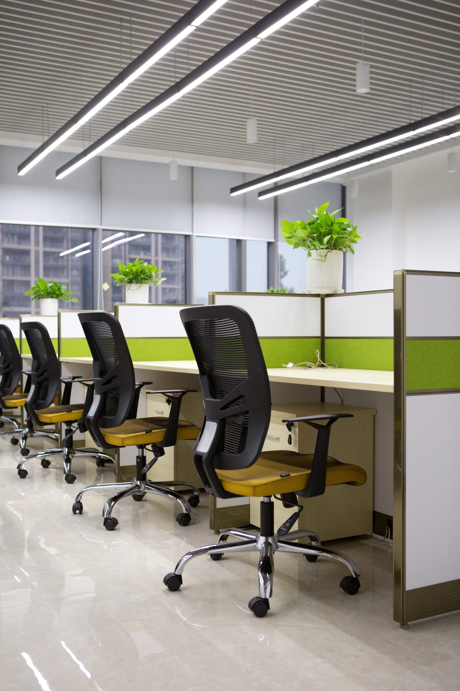

总裁办公室
总裁桌、文件柜、办公椅、沙发茶几、接待椅，强化企业形象和商务信任。
Office Project Case
企业办公空间不是单件家具组合，而是企业形象、办公效率、接待体验和项目交付的综合结果。
Project Need
办公项目通常同时涉及总裁办公室、会议室、员工办公区、文件收纳、接待洽谈区等多个空间。如果不同产品分散采购，容易出现颜色不统一、尺寸不协调、交付节奏不一致和售后责任不清的问题。
虹桥的价值，是把产品体系、空间搭配、生产配套和项目交付放在一起考虑。

Solution
总裁桌、文件柜、办公椅、沙发茶几、接待椅，强化企业形象和商务信任。
会议桌、会议椅和会议储物系统，兼顾决策、接待和长期使用稳定性。

工位、办公椅、文件柜和走线系统，关注空间效率和批量交付。
FAQ
建议先确认空间功能、人员规模、风格定位和预算范围，再进入产品选型。这样更容易保证整体效果和交付效率。
单价只能反映单件产品，项目真正考验的是风格统一、生产稳定、安装配合、售后响应和长期使用效果。